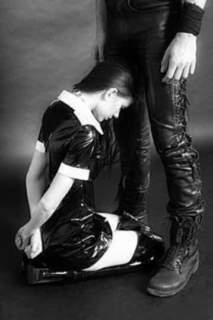
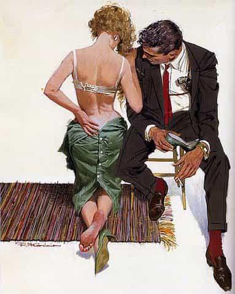
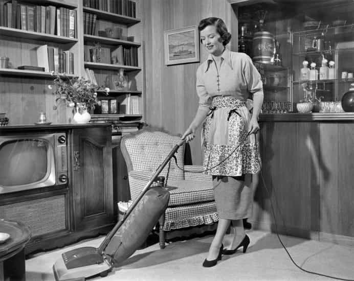

Layla Jax is a part of the small population of genuinely feminine women left in western culture. She is a keen ROK fan, a true admirer of red pill males and an avid crusader against the feminist regime.


I truly believe that society today is not a good place for masculine men. The #MeToo movement (the outrageous ‘feminism’ excuse that’s used to normalise pretty much everything that is wrong with society and women today), and the lunacy of all this ‘gender confusion’ nonsense makes me almost glad I myself am not male.

Having been an avid fan of this site for some time, I am yet to find anything that I am not in agreement with. And now I find myself writing my first article.
Let me give you some background in to myself: yes I am a women and yes I admit I can be a little crazy at times, but that’s part of the difference between our genetics and it’s sad that the fundamental differences between men and women are no longer celebrated like they should be. I have never been the type to ride the cock carousel like there’s no tomorrow. I enjoy commitment, I can hold down an intelligent conversation, and I look after my appearance.
I appreciate nothing more than a masculine man, the confidence they exude, and their ability to filter through the bullshit most women surround themselves. He makes me weak at the knees. I want nothing more than to attract a high value masculine man, and commit my life and soul to him. I believe if I was to ever hit the jackpot and attract this type of male, I would be in my element—I would be the best and most feminine version of myself I could be.
1. I want to prioritise the man above myself. His wish will be my command.
2. I want to fully commit my life to him. I would give myself to him sexually, physically and emotionally.
3. I want marriage, though not a big fancy wedding where it’s all a facade for social media. I want your last name to show you own me, to feel like I am truly yours. I am aware divorce is such a strong point to masculine men, concerned about the splitting of assets and finances if it goes wrong. But I don’t believe in divorce; I believe in hard work and commitment, and I would more than willingly sign a prenuptial agreement. In fact, I would encourage it.
4. I love housework, cooking, cleaning, admin, and organising. I want to benefit a man’s life by doing this for him. He works hard and provides, and deserves to put his feet up.
5. I want to bring ONE man’s children in to the world and bring them up as they should be, with a father present, and a mother at home to support them.

So why am I yet to find that man I want more than anything? My belief is men nowadays, even masculine true red pill taker style men, that are looking for a high value female are being blinded by the sheer volume of low value women. They are drowned in this sea of feminist culture that they are struggling to know when they’ve met a high value woman.
I don’t blame them—there are too many women today trying to cuckold men, lie and fake it, ride the cock carousel like there’s a world shortage of dick out there, and generally make minimal effort to even attempt to be of any value to a real man. It’s a sorry to state of affairs, and I completely blame it on the female of the species, as usual they’ve ended up causing more harm than good.

High value women need masculine men to come and save the genuine high value women out there. With such a lack of masculine men on the scene, the sad matter of fact that attracting cucky, blue pill, feminine men is just too easy. Genuine feminine women like myself need more than that, and we will not lower our expectations. We have more self respect and dignity then to lower our value and stoop to the lows of join the brigade of slutty women barely dressed in bars waiting open mouth for some guy to come and buy her a drink and sweep her off her feet without taking the effort to prove her value.
Please ROK readers, don’t give those women that are exceptions to the rule no option but to date low value, cucky, blue pill men. Don’t let feminism and today’s completely unappealing state of affairs make you give up looking for a high value woman. There are a few of us still out there!
Read More: Why High Heels Are Attractive On Women